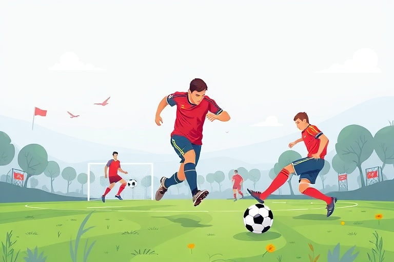

ফুটবল খেলার সহজ গাইড: নিয়মাবলী, প্রাথমিক দক্ষতা এবং শুরুর কৌশল
Category: football | Language: bn
ফুটবল কেবল একটি খেলা নয়, এটি আবেগের অন্য নাম। বিশেষ করে ভারতের পশ্চিমবঙ্গ বা কেরালার মতো জায়গায় ফুটবল মানুষের রক্তে মিশে আছে। এই নিবন্ধটি তাদের জন্য যারা ফুটবল খেলা শুরু করতে চাইছেন কিন্তু নিয়মকানুন বা প্রাথমিক কৌশলগুলো নিয়ে কিছুটা দ্বিধায় আছেন। এখানে আমরা মাঠের মাপ থেকে শুরু করে বল ড্রিবল করার সঠিক পদ্ধতি পর্যন্ত সব কিছু সহজ ভাষায় আলোচনা করব যাতে একজন নতুন খেলোয়াড় আত্মবিশ্বাসের সাথে মাঠে নামতে পারেন।
ফুটবলের সবচেয়ে মৌলিক নিয়ম হলো হাতের ব্যবহার না করা। গোলরক্ষক ছাড়া অন্য কোনো খেলোয়াড় মাঠের ভেতরে বল হাত দিয়ে স্পর্শ করতে পারেন না। একটি স্ট্যান্ডার্ড ম্যাচ ৯০ মিনিটের হয়, যা ৪৫ মিনিটের দুটি অর্ধে বিভক্ত। অফসাইড নিয়মটি নতুনদের কাছে কঠিন মনে হতে পারে; সহজভাবে বললে, বিপক্ষ দলের রক্ষণভাগের শেষ খেলোয়াড়ের পেছনে থেকে বল রিসিভ করা নিয়মবিরুদ্ধ। এছাড়া ফাউল, পেনাল্টি এবং কর্নার কিকের মতো বিষয়গুলো খেলার গতি নির্ধারণ করে, যা নিয়মিত খেললে ধীরে ধীরে আয়ত্তে আসে।
খেলা শুরু করার জন্য সঠিক সরঞ্জামের প্রয়োজন। ভারতের শক্ত মাঠে খেলার জন্য সাধারণত 'ফার্ম গ্রাউন্ড' (FG) স্টাড বা বুট সবচেয়ে ভালো। পায়ের সুরক্ষার জন্য শিন-গার্ড (Shin-guards) পরা বাধ্যতামূলক, কারণ এটি হাড়ের আঘাত থেকে রক্ষা করে। খুব দামি বুট দিয়ে শুরু করার প্রয়োজন নেই, তবে বুট যেন পায়ের মাপমতো হয় এবং গ্রিপ ভালো থাকে সেদিকে খেয়াল রাখা জরুরি। সুতির মোজা এবং ঘাম শুষে নিতে পারে এমন জার্সি ও হাফপ্যান্ট পরা আরামদায়ক হবে।
পাসিং বা বল আদান-প্রদান ফুটবলের প্রাণ। নতুনরা প্রায়ই পায়ের পাতা বা সামনের অংশ দিয়ে বল মারার চেষ্টা করেন, যা সঠিক পদ্ধতি নয়। সঠিক কৌশল হলো পায়ের ভেতরের অংশ (Inside of the foot) ব্যবহার করা। বল মারার সময় আপনার অন্য পা-টি বলের ঠিক পাশে থাকতে হবে এবং শরীরের ভারসাম্য বজায় রাখতে হবে। সঠিক ওজনের পাস দেওয়ার অভ্যাস করুন যাতে আপনার সতীর্থ সহজেই বলটি নিয়ন্ত্রণ করতে পারে। খুব জোরে বা খুব আস্তে পাস দিলে বলের দখল হারানোর সম্ভাবনা থাকে।
ড্রিবলিং শেখার জন্য বলের ওপর নিয়ন্ত্রণ থাকা খুব জরুরি। শুরুতে পায়ের খুব কাছে বল রেখে হাঁটার গতিতে এগোতে শিখুন। বলটিকে পায়ের পাতা দিয়ে আলতো করে ঠেলুন, জোরে লাথি মারবেন না। প্র্যাকটিসের সময় সবসময় মাটির দিকে না তাকিয়ে মাঝেমধ্যে সামনের দিকে তাকানোর চেষ্টা করুন, যাতে মাঠের পরিস্থিতি বোঝা যায়। দুই পা ব্যবহার করে ড্রিবল করার অভ্যাস করলে আপনি প্রতিপক্ষের খেলোয়াড়কে সহজেই কাটিয়ে বেরিয়ে যেতে পারবেন। মনে রাখবেন, বল যেন আপনার শরীর থেকে খুব দূরে সরে না যায়।
মাঠে নিজের ভূমিকা বা পজিশন বোঝা অত্যন্ত গুরুত্বপূর্ণ। সাধারণত স্ট্রাইকারদের কাজ হলো গোল করা, মিডফিল্ডাররা খেলা তৈরি করেন এবং ডিফেন্ডাররা বিপক্ষকে গোল করা থেকে আটকান। নতুন হিসেবে আপনি সব পজিশনে খেলে দেখতে পারেন আপনার দক্ষতা কোথায় বেশি। গোলরক্ষক হতে চাইলে আপনার রিফ্লেক্স এবং হাত দিয়ে বল ধরার ক্ষমতা ভালো হতে হবে। মনে রাখবেন, ফুটবল একটি দলীয় খেলা, তাই একলা খেলার চেয়ে সতীর্থদের সাথে পাস দিয়ে খেলা অনেক বেশি কার্যকরী এবং সহজ।
একটি বাস্তব উদাহরণ ধরা যাক: আপনি মাঝমাঠে বল পেলেন এবং একজন বিপক্ষ খেলোয়াড় আপনার দিকে তেড়ে আসছেন। এই পরিস্থিতিতে আতঙ্কিত না হয়ে বলটি নিজের শরীরের আড়ালে রাখুন (Shielding)। আপনার কোনো সতীর্থ ফাঁকায় আছে কিনা দ্রুত দেখে নিয়ে তাকে পাস দিন। বল নিয়ে অহেতুক দৌড়ানোর চেয়ে সঠিক সময়ে পাস দেওয়া একজন বুদ্ধিমান খেলোয়াড়ের পরিচয়। একেই বলে 'গেম সেন্স' বা খেলার বোধ, যা নিয়মিত অনুশীলনের মাধ্যমেই তৈরি হয়।
নতুন খেলোয়াড়রা প্রায়ই একটি সাধারণ ভুল করেন—সবাই মিলে বলের পেছনে দৌড়ানো। একে 'বাঞ্চিং' বলা হয়। এটি করলে মাঠের বাকি অংশ ফাঁকা হয়ে যায় এবং শক্তির অপচয় হয়। সবসময় নিজের নির্দিষ্ট পজিশন ধরে রাখার চেষ্টা করুন। এছাড়া অনেকে ওয়ার্ম-আপ না করেই খেলা শুরু করেন, যার ফলে মাংসপেশিতে টান বা লিগামেন্টে চোট পাওয়ার ঝুঁকি বাড়ে। খেলা শুরুর আগে অন্তত ১০-১৫ মিনিট স্ট্রেচিং এবং হালকা জগিং করা শরীরের পেশিগুলোকে সচল করার জন্য একান্ত প্রয়োজন।
ফুটবল একটি শারীরিক কসরতের খেলা, তাই পুষ্টি ও বিশ্রামের দিকেও নজর দিতে হবে। ডিহাইড্রেশন এড়াতে খেলার আগে ও পরে প্রচুর জল পান করুন। ভারতের গরম আবহাওয়ায় দুপুরের কড়া রোদে না খেলে ভোরে বা বিকেলে প্র্যাকটিস করা নিরাপদ। যদি আপনার আগে থেকে কোনো হার্টের সমস্যা বা শ্বাসকষ্ট থাকে, তবে দীর্ঘক্ষণ দৌড়ানোর আগে ডাক্তারের পরামর্শ নেওয়া উচিত। ছোটখাটো চোট অবহেলা করবেন না, ব্যথার জায়গায় বরফ দিন এবং প্রয়োজনে বিশ্রাম নিন যাতে চোট বড় আকার ধারণ না করে।
পরিশেষে, ফুটবল শেখার সেরা উপায় হলো নিয়মিত মাঠে নামা। আপনার এলাকার কোনো স্থানীয় ক্লাব বা বন্ধুদের সাথে ছোট ছোট ম্যাচে অংশ নিন। শুধুমাত্র ভিডিও দেখে ফুটবল শেখা সম্ভব নয়, তাই আজই একটি ফুটবল নিয়ে মাঠে চলে যান। প্রথমে পাসিং এবং বল কন্ট্রোলের ওপর জোর দিন, তারপর ধীরে ধীরে শুটিং এবং ট্যাকটিকস শিখুন। ধৈর্য ধরুন এবং নিয়মিত অনুশীলন করুন, দেখবেন অল্প দিনেই আপনি মাঠের একজন নির্ভরযোগ্য খেলোয়াড় হয়ে উঠেছেন। আপনার পরবর্তী পদক্ষেপ হোক প্রতিদিন অন্তত ৩০ মিনিট বল নিয়ে মাঠে কাটানো।